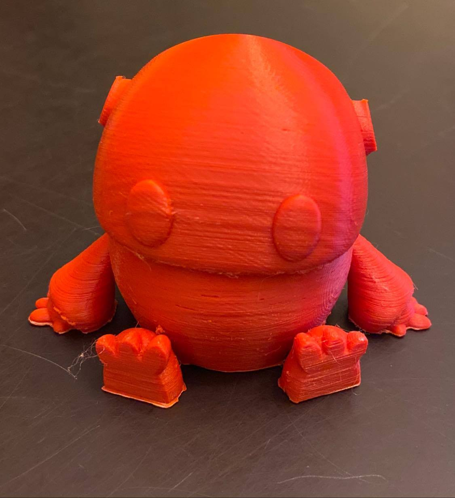

Davis Roman
PortfolioCPSC 599: Assignment 1
Summary:
Assignment one of CPSC 599, Physical and Tangible HCI, focuses on developing our basic knowledge of arduino as well as TUIs. Thus, the main goal of this project was simply to connect a button to an LED, and to add our own 'surprise' to it. My implementation, 'Gary's welcome to the world' shows that much can be down with simple interactions. For my implementation of Assignment one, I had five LEDs which blinked a pre-programmed phrase in morse code. An LCD screen would then translate what is being said by Gary (from morse code to english) and show it to the user. Additionally, if one were to get too close to an ultrasonic sensor (and thus Gary), he would present a secret message. Below are images of the development process, a video of the final product, the code, and schematics for the system.
Photos:
Initial Implementation of LEDs:

Button Wiring:
Wiring:
Implementation of LCD:

Finished Product:
Video:
Code:
To view the code for the above project, click here.
Circuit Schematic / Breadboard Schematic:
Circuit Schematic:
Breadboard Schematic:
To download the Fritzing file containing both schematics, click here.
References:
ArduinoCC:
- https://www.arduino.cc/en/tutorial/button
- https://www.arduino.cc/en/tutorial/ping
- https://www.arduino.cc/en/Tutorial/LiquidCrystalDisplay
Gary:
- https://pinshape.com/items/15344-3d-printed-wip-tiny-articulated-bot